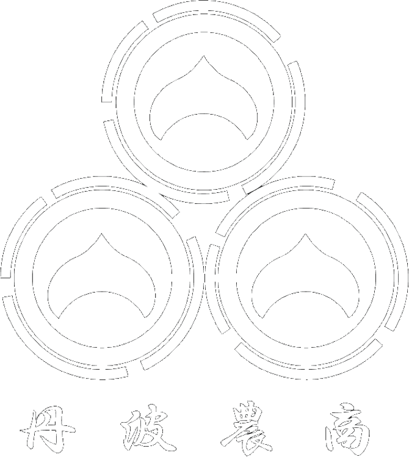
株式会社丹波農商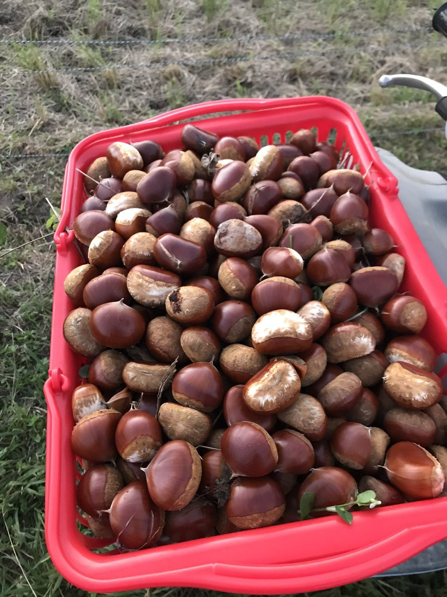
KURIHARA'S TAMBA CHESTNUT
丹波市最大級の栗園2.3ha サッカーコート3面分の広さです。
2014年に豪雨で土砂崩れがおき、山が崩れました。
流れた土をもう一度戻し、水はけの良さを活かし、約600本の栗を植えました。
落ち葉やイガがもう一度土に栄養をもたらし、山は復活。
栗原の栗園は地域の皆様の協力と、循環型農業で成り立っています。
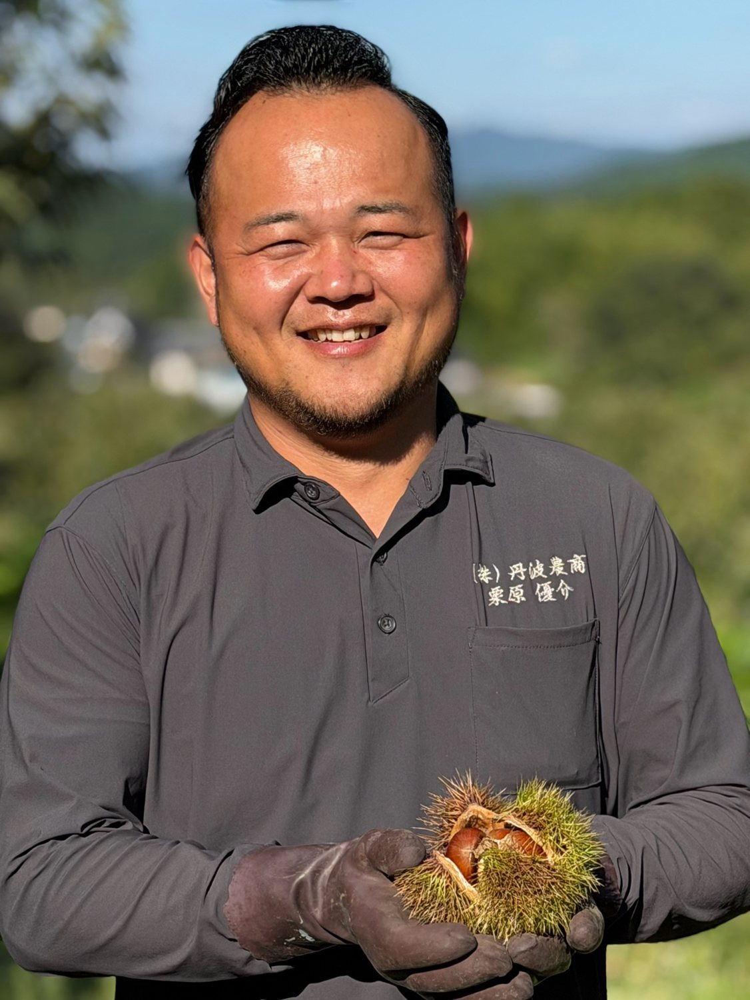
こんにちは、栗原と申します。
この栗園は、私の家のすぐ近くにあります。2014年の丹波市豪雨災害で山が崩れ、この場所は土砂に埋まりました。
その土砂を受け入れ、栗園として再生させようと立ち上がったのが、地域の栗部会の皆さんでした。私も土砂を戻す作業や栗の植え付けに加わり、一緒に汗を流しました。掘れば大きな石がゴロゴロと出てくる土で、せっかく植えた木の多くが一度は枯れてしまいました。それでもあきらめずに植え直し、何年も手入れを続け、ようやく栗が実り、出荷できるところまでたどり着きました。
そのタイミングで、私たちがこの栗園を引き継ぐことになりました。
2019年の創業以来、小さな栗園で栗づくりを続けてきた私たちにとって、丹波市最大級となるこの栗園は大きな挑戦です。けれど、ここは自分の手で土を戻し、木を植えた、思い入れのある場所です。
災害から立ち上がり、次の世代のためにと力を尽くしてこられた先輩方の思いも一緒に引き継ぎ、この土地の栗を、しっかりと皆さまにお届けしてまいります。
どうぞよろしくお願いいたします。
株式会社丹農食品 代表取締役 栗原 優介
「丹波といえば栗、栗といえば丹波」。
朝廷や幕府にも献上されてきた、栗の産地の名前です。
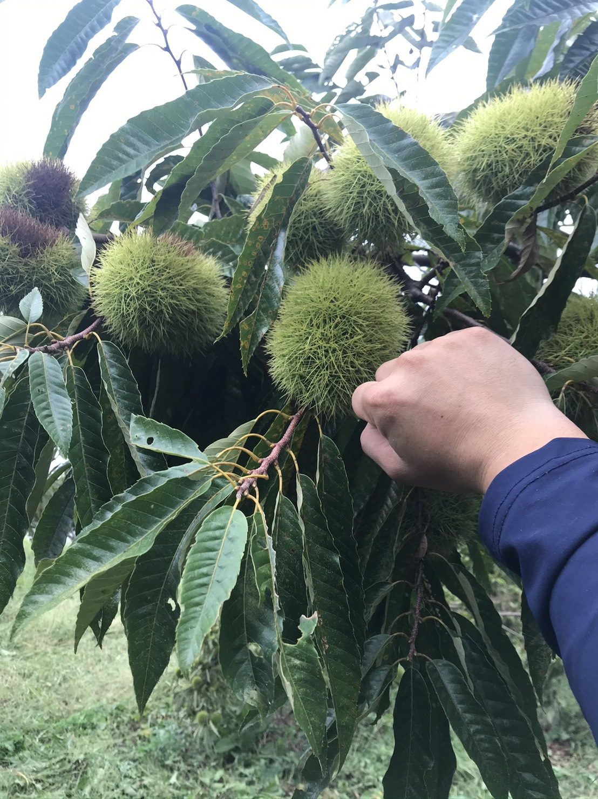
歴史丹波の栗は古くから名が知られ、千年以上にわたって高級品として扱われてきました。中国から伝わった接ぎ木の技術を生かし、より大きく、より甘い栗へと作り手が改良を重ねてきた歴史があります。
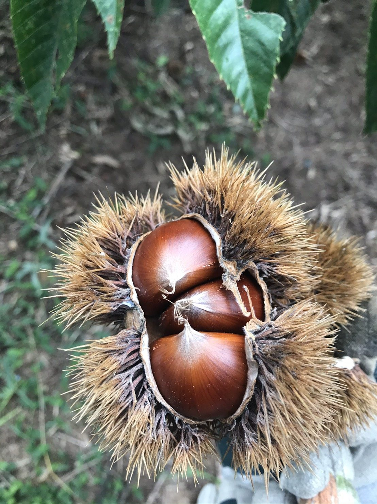
品種「丹波栗」はひとつの品種の名前ではなく、丹波で採れる大粒で味のよい栗の総称です。いまの代表的な品種は、丹波で生まれた「銀寄（ぎんよせ）」。実が大きく、甘み・風味・色つやのよさから、高級な和菓子や洋菓子に使われています。
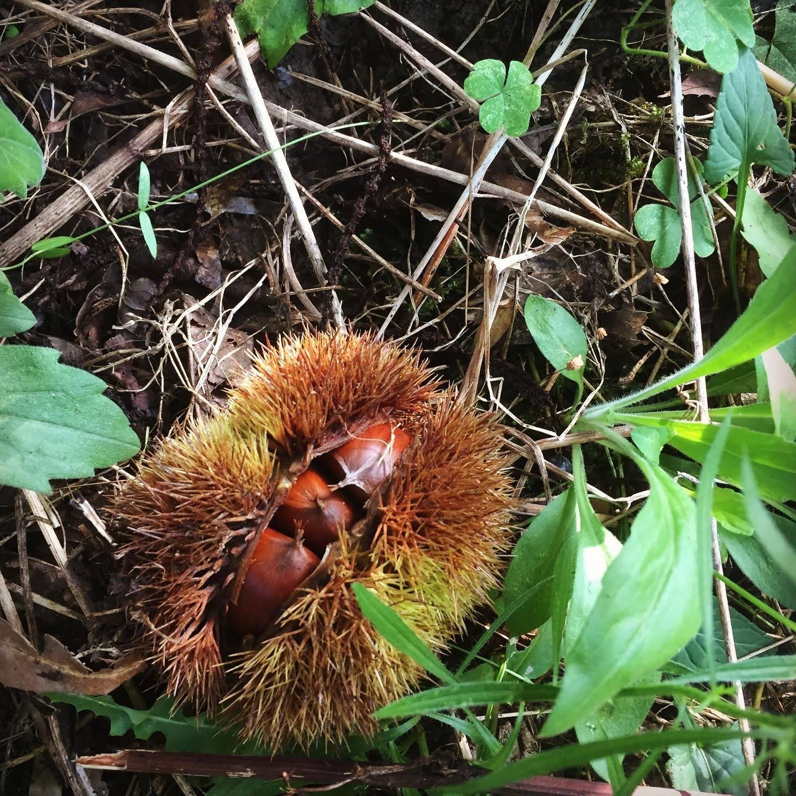
気候丹波は山に囲まれた盆地で、年平均気温は東北地方と同じくらい。季節によっては昼と夜の気温差が20度を超えます。昼にためた養分が夜のうちに実に蓄えられ、甘みがのります。
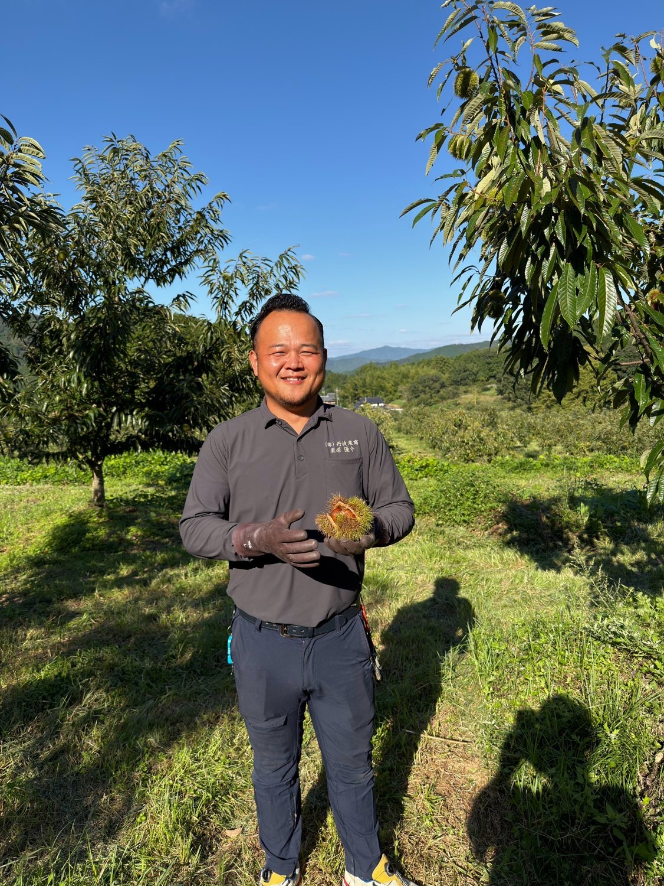
栗は、日当たりがとても大事な木です。私たちは年に一度、冬に剪定を行い、木の奥まで光が入るように枝を整えています。そうすることで実が大きく、丹波栗らしく育ちます。そして、良い作物は良い土から生まれます。栗園のすぐ近くには堆肥舎があり、自分たちで育てている但馬牛の堆肥を、良い状態のまま土に入れることができます。牛のふんを堆肥にして土をつくり、栗や野菜、牧草、米を育て、その作物がまた牛を育てる。光と土の両方に手をかけ、この土地の中で命をめぐらせる。それが私たちの栗づくりです。
この栗づくりが世界でどう受け止められるのかを確かめたくて、2026年2月、いつか世界へ届けたいと思い続けてきた丹波栗を持って、初めてフランス・パリを訪れました。なにより心に残ったのは、栗の味だけでなく、循環型農業そのものへの反応です。牛と土と作物がめぐる仕組みに、フランスの方々は強い関心と深い敬意を寄せてくれました。言葉や国を越えても、本質は伝わる。そう実感した瞬間でした。
手間を惜しまず、土地の循環の中で育てること。それこそが本物の丹波栗をつくる道だと、私たちは信じています。本物をつくる。それが、これからの私たちのテーマです。この土地の栗の価値を、地域から日本へ、そして世界へ。丹波栗で挑戦を続けていきます。
牛・牧草・堆肥・米・栗をつなぐ循環型農業について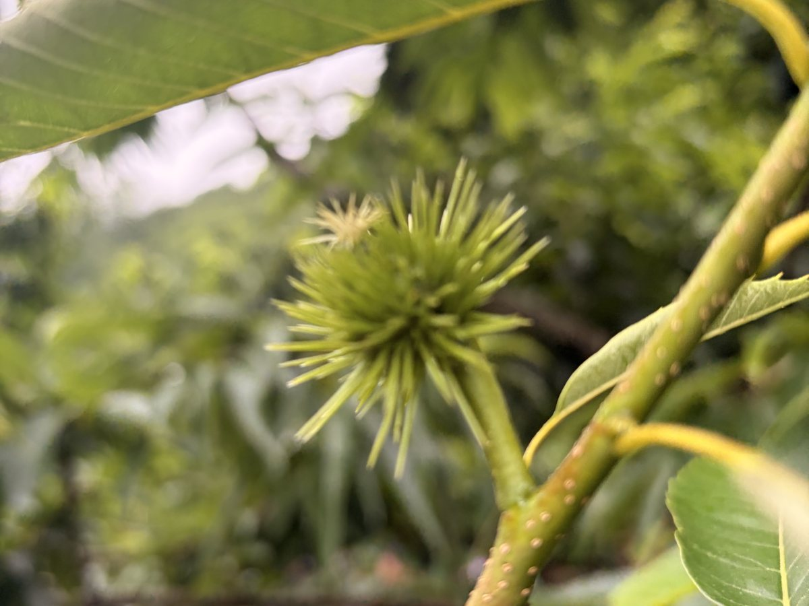
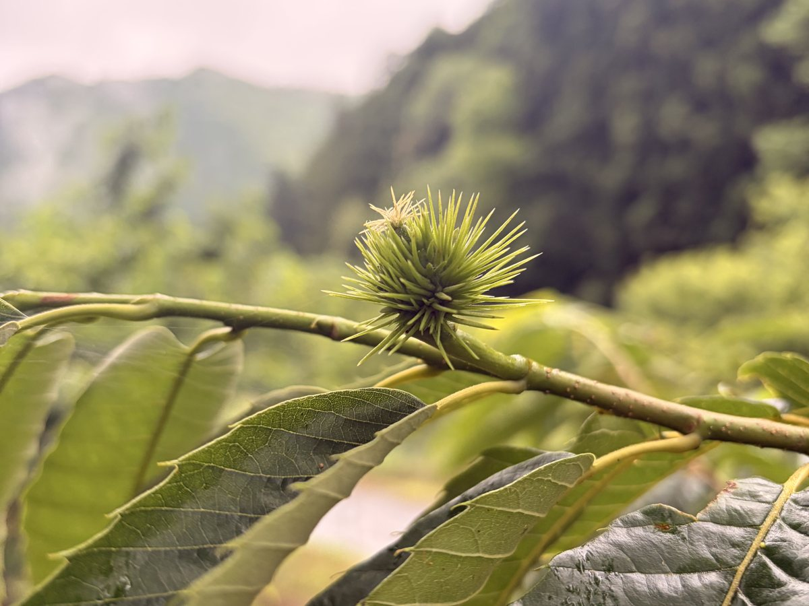
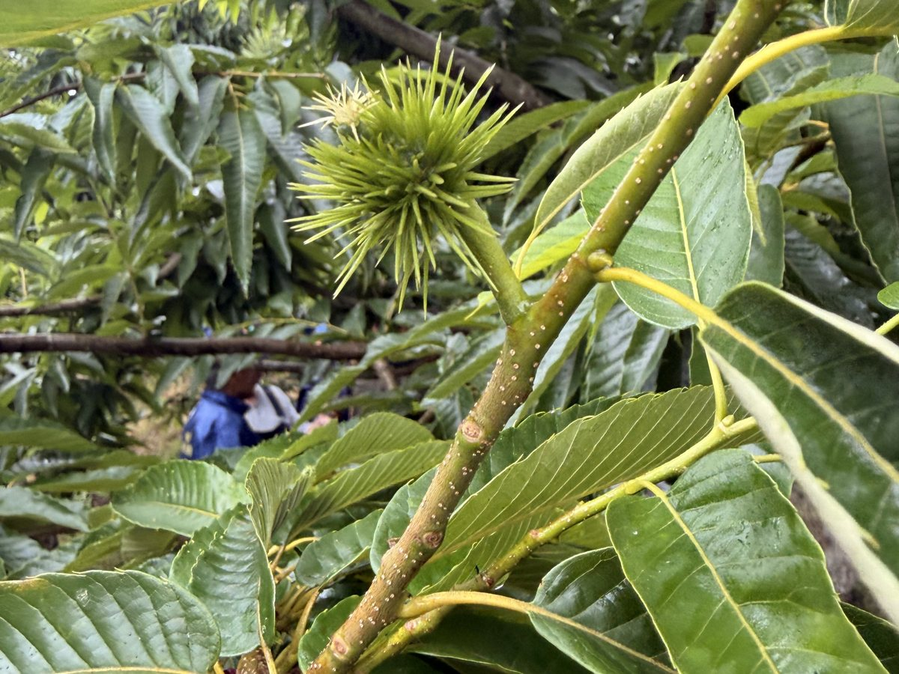
収穫の秋の前、枝には小さな青いイガが育ちます。日がよく当たるよう手入れした枝で、実を大きく育てていきます。
イガが割れた栗をひとつずつ拾い、選別機で大きさをそろえ、最後は人の目と手で選り分けます。丹波栗がお店に届くまでの流れをご覧ください。
栗園の木でイガが割れはじめると、収穫の季節です。
イガが割れて落ちた栗を、栗園で手で拾い集めます。
選別機にかけて、粒の大きさ（L・2L・3Lなど）ごとに分けます。
最後はひと粒ずつ目で確かめ、手で選り分けて仕上げます。
収穫した栗は−1〜1℃に設定した冷蔵で保管し、加工やお届けまで鮮度を保ちます。
生の栗だけでなく、手間のかかる皮むきや下ごしらえも
丹波でおこない、使いやすい形でお届けします。
大きさごとに選別した丹波栗。
鬼皮も渋皮もむいた栗。料理や栗ご飯にそのまま使えます。
硬い鬼皮だけをむき、渋皮を残した栗。渋皮煮などの原料に。
渋皮を残したまま、じっくり煮含めた丹波栗。
ゆでて下ごしらえした栗。
製菓・料理に使いやすいペースト。
丹波栗を粉にする新しい加工品を、加工会社さんと一緒に試作しています。
※ 収穫量に限りがあるため、時期・数量によってはお受けできない場合があります。規格や量はご相談ください。
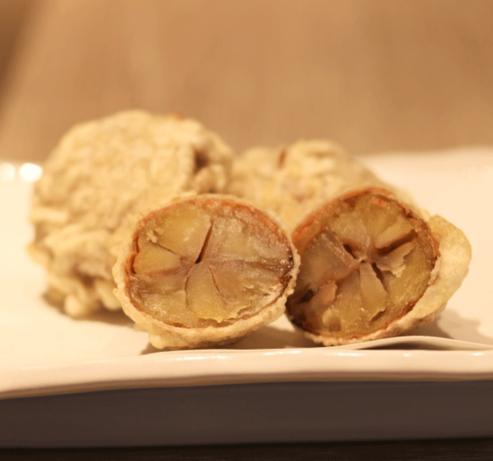
大阪・東京を中心に、フランス料理をはじめとするレストラン、和菓子店・洋菓子店、食品メーカーなど、栗の質にこだわるお客様に使っていただいています。
「この大きさで、この量を、この時期に」「皮むきまで済ませてほしい」など、使い方に合わせたご相談をお待ちしています。
生栗・むき栗・渋皮付き・ペーストなどのご相談は、お電話かフォームでお気軽にどうぞ。
ご希望の品目・量・時期をお知らせいただくとスムーズです。